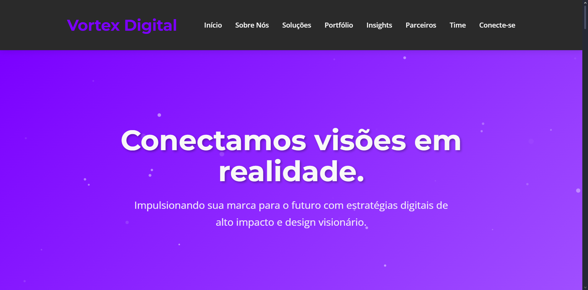

Vortex Digital
InstitucionalWebsite institucional para agência digital com foco em captação de leads. Design moderno e animações sutis.
Sou Mauricio Silva, desenvolvedor Full-Stack e Designer. Unifico estratégia de negócios com código limpo para construir sites que não apenas existem, mas vendem.
Foco em React, HTML5, Tailwind e UX/UI

Minha jornada começou no IFRN (Programação Web) e evoluiu para uma visão estratégica na UFRN (Administração). Essa combinação única me permite entender não apenas de código, mas de modelos de negócio.
Não entrego apenas "telas bonitas". Entrego interfaces pensadas para a experiência do usuário (UX) e otimizadas para motores de busca (SEO).
UFRN | 2025 - Presente
IFRN | Concluído 2025
Soluções completas do design ao código.
Sites rápidos, responsivos e otimizados, construídos com as melhores práticas de SEO e acessibilidade.
Layouts modernos criados no Canva/Figma focados em guiar o usuário até a conversão.
Seu site perfeito em qualquer dispositivo: celulares, tablets e desktops de alta resolução.
Website institucional para agência digital com foco em captação de leads. Design moderno e animações sutis.
SPA (Single Page Application) interativa para estudo de matemática e redação. Utiliza LocalStorage para salvar progresso.
"Mauricio transformou nossa ideia vaga em uma plataforma robusta e bonita. A atenção aos detalhes e a comunicação durante o projeto foram excepcionais."
Cliente Confidencial
Projeto Web Institucional